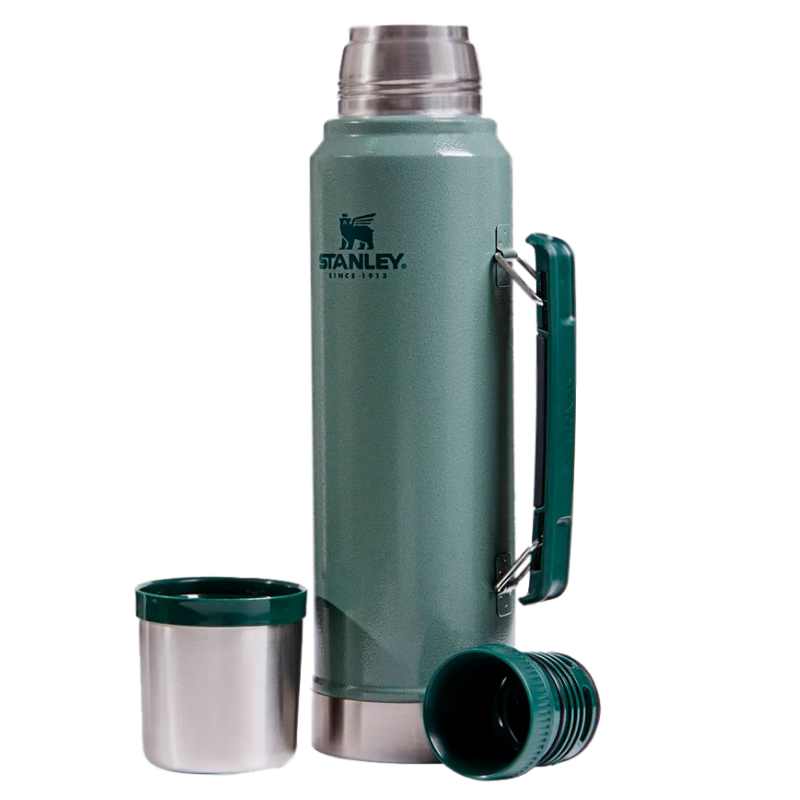

Contacto
Nuestras Tiendas
Trabaja Con Nosotros
Pagina principal
Termo Stanley

Termo Stanley
Los termos Stanley están hechos con doble capa de acero inoxidable de 18/8 ideal para soportar altas temperatura. Diseñado para durar, su pared exterior de acero grueso puede soportar golpes y caídas mejor que cualquier otro termo del mercado.
MANTIENE EL CALOR O EL FRÍO: Este botella termica 1 litro Classic de Stanley está fabricado con un aislamiento superior que mantiene los líquidos (sopa, café, té) calientes o las bebidas frías durante 24 horas
DURADERO Y SEGURO: Gracias a su acero inoxidable de grado alimentario de alta calidad 18/8, resistente y a prueba de óxido, este termo de Stanley está hecho para durar; Fabricado con materiales sin BPA, manteniendo su contenido seguro para el consumo
TAPA ANTIFUGAS MULTIUSOS: El cantimplora acero inoxidable de Stanley cuenta con una tapa antifugas, para que puedas ponerlo en tu mochila sin preocuparte de ningún derrame; La amplia boca del termo ayuda a verter fácilmente en la tapa que hace las veces de taza
FÁCIL DE LIMPIAR: Este termo cafe está diseñado para limpiarse fácilmente; Cada pieza de este termo de acero inoxidable es apta para lavavajillas, sólo en la cesta superior
GARANTÍA DE POR VIDA: «Fabricado para toda la vida» es un lema que Stanley mantiene desde 1913; Es una promesa que siguen manteniendo; Los productos Stanley tienen una garantía de por vida contra defectos de fabricación